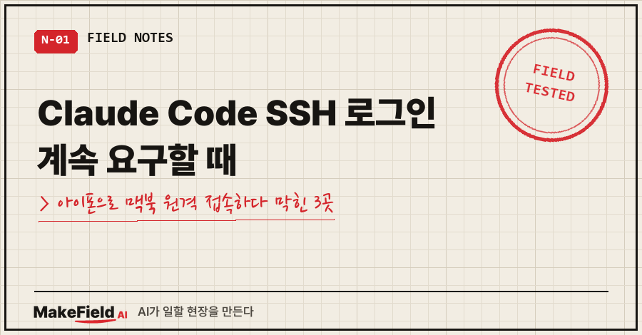
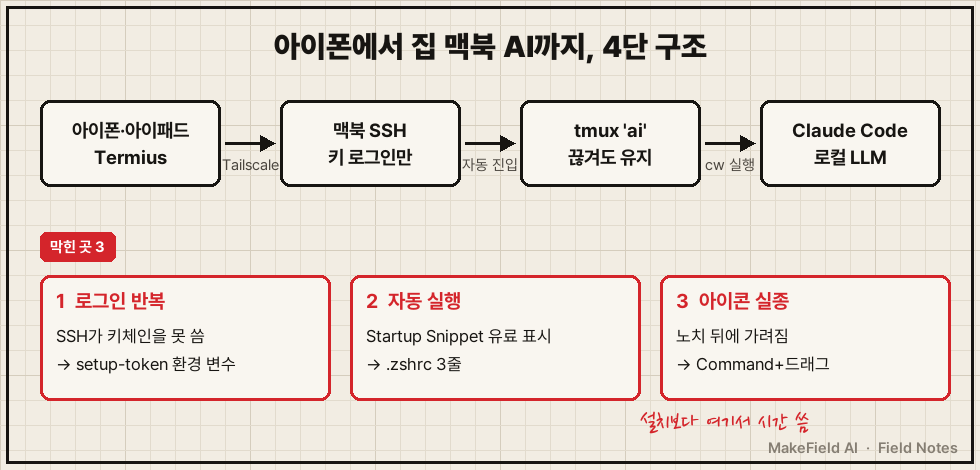
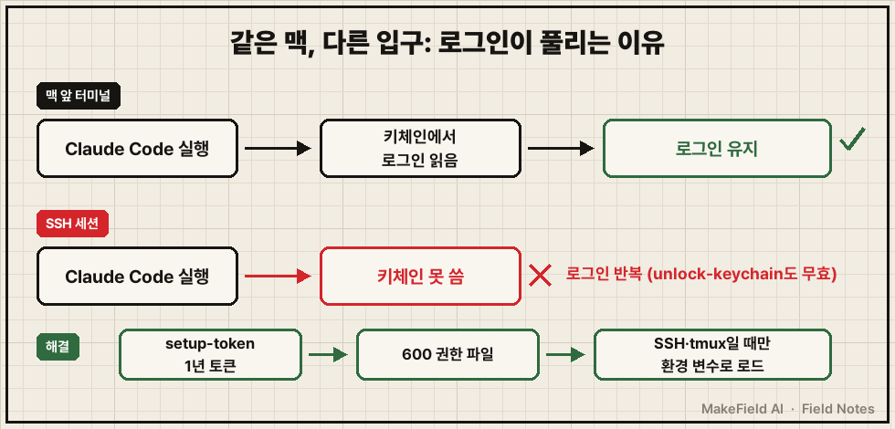
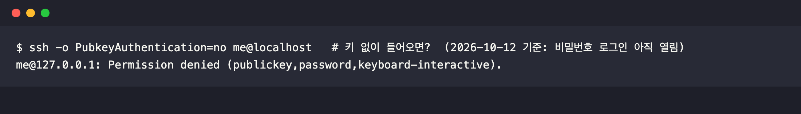
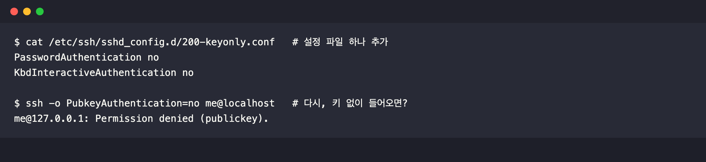

밖에서 아이폰으로 집 맥북에 SSH로 들어가 Claude Code를 켰더니, 맥 앞에서는 멀쩡하던 게 매번 로그인부터 하라고 하더라고요.
결론부터요. 맥에서 Claude Code 로그인 정보는 macOS 키체인에 저장되는데, SSH로 들어온 세션은 그 키체인을 제대로 못 써서 로그인을 다시 요구해요. claude setup-token으로 1년짜리 토큰을 받아 CLAUDE_CODE_OAUTH_TOKEN 환경 변수로 넣어 주면 끝납니다(2026년 10월 11일, 맥북 M1 Pro·macOS 26 실측).
평일엔 공장 설비 제어를 만지고, 밤엔 집 맥북에 AI를 올려 노는 15년차 엔지니어예요. 목표는 "폰 하나로 집 AI 부리기". 설치법은 흔하니까 막힌 3곳만 적을게요.
1. 구조부터: 폰 → Tailscale → 맥북 SSH → tmux → AI

구성은 네 가지예요.
- Termius — 아이폰·아이패드용 SSH 앱. 기기마다 키를 하나씩 만들어 맥에 등록했어요
- Tailscale — 내 기기끼리만 묶는 사설망. 공유기 포트포워딩 없이 밖에서 맥에 닿아요
- tmux — 접속이 끊겨도 맥 안에서 작업이 계속 도는 창
- Claude Code — 맥에서 실제로 일하는 AI
막힌 곳은 셋이었어요. 하나씩 갈게요.
2. 막힘 1: SSH에서 Claude Code가 계속 로그인하라고 해요
tmux 안에서 켜자마자 로그인 화면이 떴어요.
맥 앞에서는 이미 로그인돼 있는데 말이죠.
처음엔 키체인이 잠겨서 그런가 싶어 잠금 해제부터 해 봤어요.
security unlock-keychain결과는 그대로. 또 로그인하라고 하더라고요..
원인은 저장 위치였어요. Claude Code 공식 문서에 macOS는 로그인 정보를 키체인에 저장하고, SSH 세션에서는 키체인이 잠겨 있을 수 있다고 적혀 있어요. 맥 화면 앞의 로그인은 키체인에 들어 있는데, SSH로 들어온 세션은 그걸 못 꺼내 쓰는 거죠.

해결은 setup-token이었어요.
- 맥에서
claude setup-token실행 → 브라우저 승인 → 터미널에 1년짜리 토큰이 찍혀요(공식 문서: 이 명령은 토큰을 어디에도 저장하지 않음) - 그 토큰을 홈 폴더 파일에 넣고 권한을 600(나만 읽기)으로
.zshrc에서 SSH나 tmux로 들어왔을 때만 그 파일을 읽게
# 원격(SSH·tmux)일 때만 Claude 토큰 로드
if [[ -n "$SSH_CONNECTION" || -n "$TMUX" ]] && [[ -r ~/.claude/ssh_oauth_token ]]; then
export CLAUDE_CODE_OAUTH_TOKEN="$(<~/.claude/ssh_oauth_token)"
ficlaude -p로 질문 하나 던져 인증을 확인했어요. 맥 앞 터미널은 원래대로 키체인을 써요.
겪은 사람만 아는 주의점 하나. 이 토큰은 비밀번호급이에요. 저는 설정하다가 토큰을 AI 대화창에 붙여 넣었는데, 그러면 대화 기록 파일에 그대로 남아요. 채팅·캡처에 넣지 말고, 넣었다면 다시 발급하는 게 맞습니다.
3. 막힘 2: 접속하면 자동으로 tmux에 들어가게 하기
폰에서 접속할 때마다 tmux attach를 치는 것도 일이에요.
Termius에는 접속 직후 명령을 실행하는 Startup Snippet 기능이 있는데, 제 화면에선 유료 표시가 붙어 있었어요(2026년 10월 기준, 요금제 구성은 바뀔 수 있어요).
그래서 .zshrc 3줄로 대신했어요.
# SSH 접속 시 tmux 'ai' 세션으로 자동 진입(없으면 새로 만듦)
if [[ -n "$SSH_CONNECTION" && -z "$TMUX" && $- == *i* ]]; then
tmux new -A -s ai
fi-A가 핵심이에요. 세션이 있으면 붙고, 없으면 만들어요.
폰 화면에서 손가락으로 스크롤하려면 ~/.tmux.conf에 set -g mouse on 한 줄도 넣어 두세요.
이제 순서가 이렇게 됐어요.
폰에서 접속 → 비밀번호 없이 → tmux 자동 → 별칭 cw 한 단어로 AI 실행.
아이패드에서 일을 시켜 두고 아이폰으로 같은 세션을 이어 보는 것도 됐어요.
4. 막힘 3: Tailscale 아이콘이 메뉴 막대에서 사라졌어요
Tailscale을 1.104.1로 업데이트한 뒤 메뉴 막대 아이콘이 안 보였어요. 설정에서 '로그인 시 시작'을 켜려니 "Start on Login could not be set" 오류까지 떴고요.
고장인 줄 알았는데 아니었어요.
- 아이콘: 맥북 노치 뒤에 가려진 것이었어요. 앱 설정값에 가려짐 알림 기록(
OccludedIconAlertSuppressed=1)이 남아 있었고, 동작은 정상이었어요. Tailscale 공식 문서도 Command 키를 누른 채 메뉴 막대 아이콘을 끌어서 자리를 옮기라고 안내해요 - 자동 시작: 앱 안 스위치 대신 macOS 로그인 항목에 Tailscale을 직접 추가했어요
메뉴 막대에 앱이 많은 노치 맥북이라면 한 번쯤 겪으실 거예요.
5. 마지막: 비밀번호 로그인 닫기
폰으로 열어 둔 건 권한이 큰 AI 세션이에요. 그런데 키 없이 들어와 보니 비밀번호 로그인이 아직 열려 있었어요.

password가 목록에 있다는 건 비밀번호만 맞히면 들어온다는 뜻이에요. 그래서 설정 파일을 하나 추가했어요.
# /etc/ssh/sshd_config.d/200-keyonly.conf
PasswordAuthentication no
KbdInteractiveAuthentication noSSH 서버 재시작 명령은 복사하다 띄어쓰기가 빠져서 실패했는데, 다시 키 없이 들어가 보니 이미 막혀 있었어요. 맥은 접속이 올 때마다 SSH 서버를 새로 띄워서 재시작 없이 적용된 거예요.

순서가 중요해요. 폰 키 접속이 되는 걸 먼저 확인하고 나서 비밀번호를 닫아야 해요. 거꾸로 하면 밖에서 영영 못 들어가요. 저는 아이패드·아이폰 둘 다 키로 들어가지는 걸 본 뒤에 닫았어요.
6. 막힌 곳 한눈에 보기
| 증상 | 원인 | 제가 한 해결 | 안 고른 방법 |
|---|---|---|---|
| SSH에서 Claude Code 로그인 반복 | SSH 세션이 키체인 로그인을 못 씀 | setup-token → 600 파일 → 환경 변수 | security unlock-keychain(효과 없음) |
| 접속마다 tmux 수동 실행 | 자동 실행 기능이 유료로 보임 | .zshrc에 tmux new -A -s ai | Termius Startup Snippet |
| Tailscale 아이콘 실종 | 노치 뒤에 가려짐 | Command+드래그, 로그인 항목 직접 추가 | 재설치 |
| 키 없이도 접속 가능 | 비밀번호 로그인 기본 허용 | sshd_config.d에 설정 파일 추가 | 그대로 두기 |
화면이 꼭 필요한 일(관리자 비밀번호 창 같은 것)은 SSH 말고 원격 화면 앱으로 나눴어요. SSH는 글자로 시키는 일, 화면 앱은 눈으로 봐야 하는 일이에요.
Q. setup-token 토큰은 아무 요금제에서나 되나요?
공식 문서 기준 Pro·Max·Team·Enterprise 구독이 필요해요. 그리고 모델 요청만 할 수 있어서 claude.ai 커넥터는 이 토큰으로 못 불러와요. 맥에 직접 설정한 MCP 서버는 그대로 돼요.
Q. 원격으로 쓰다가 맥을 재부팅해도 되나요?
디스크 암호화(FileVault)를 켜 둔 맥이라면 재부팅 후 첫 로그인은 맥 앞에서 비밀번호를 쳐야 풀려요. 저는 원격으로 쓰는 중엔 재부팅을 안 하는 걸 규칙으로 뒀어요.
이 환경을 만들고 나서 바로 한 일이 폰으로 맥북 로컬 LLM을 돌려 보는 거였어요. 그 결과는 로컬 LLM 할루시네이션 실험 글에 있어요.
여러분은 집 컴퓨터를 밖에서 어떻게 부르세요? 저는 이 세팅으로 "퇴근길 폰에서 일 맡기기"가 처음으로 실제가 됐어요.
집 장비에 AI를 올리다 막힌 곳들은 makefield.ai에서도 찾아보실 수 있어요.
출처
- Claude Code 공식 문서, Authentication(macOS 키체인 저장·SSH 세션 잠김,
claude setup-token1년 토큰·저장 안 함,CLAUDE_CODE_OAUTH_TOKEN, 지원 요금제) → https://code.claude.com/docs/en/authentication (2026-10-14 확인) - Tailscale 공식 문서, Troubleshoot Tailscale icon not appearing(Command+드래그) → https://tailscale.com/docs/reference/troubleshooting/apple/macos-doesnt-display-tailscale-icon
- 설정·출력 원문: 2026-10-11~12 개인 맥북 실측(계정·주소·키 지문 마스킹)
태그: #ClaudeCodeSSH로그인 #클로드코드 #ClaudeCode #setuptoken #CLAUDE_CODE_OAUTH_TOKEN #맥북SSH #아이폰SSH #Termius #터미어스 #Tailscale #테일스케일 #tmux #맥북원격접속 #키체인 #MakeFieldAI